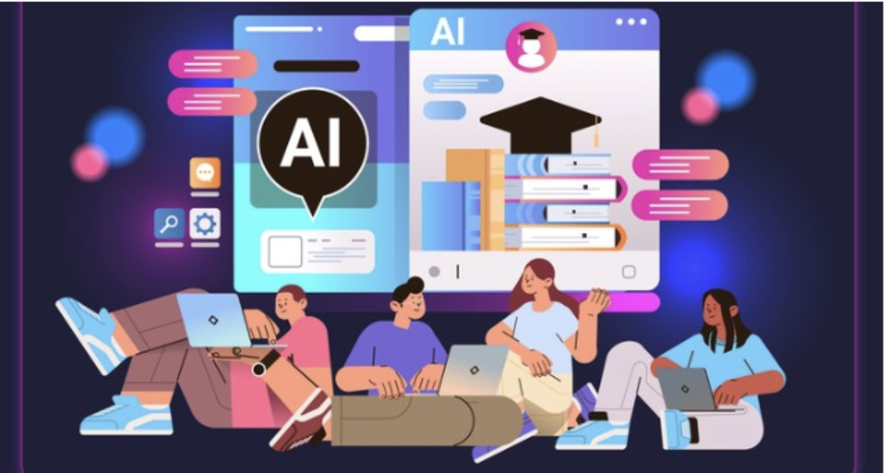

The Hidden Cost of Your AI Tools - And Who Should Actually Be Paying It
Every query has a cost most of us never see.

You've probably used ChatGPT to draft an email, asked Claude to help outline a paper, or let Gemini summarize a dense reading. Maybe all three in the same week. So have hundreds of millions of other people, and that collective behavior is fueling one of the fastest expansions of energy infrastructure in modern history.
The International Energy Agency projects that global data center electricity consumption will nearly double by 2030, driven largely by AI growth. This can't be pushed off to something "happening in the future." It's happening now, while most of us have no idea it's connected to our homework and research tools.
This blog isn't here to guilt you. It's here to argue that the conversation about AI's environmental impact has been pointed in the wrong direction - at users - when the companies building this infrastructure are the ones with the actual power to change it. Let's dig into why.